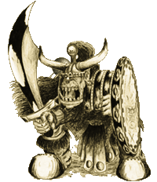
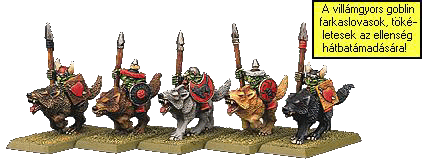

| |
Ork &
Goblin taktikák
Az
orkok és a többi zöldbõrû nem éppen a legkönnyebben
kijátszható sereg a Warhammer-ben. Éppen ezért
nem árt némi tanácsot "papírra"
vetni, amit nagyrészt a saját káromon tanultam
meg.
A zöldbõrû
seregek nem csak egy fajból állnak, hanem igen
széles tárházzal rendelkeznek. A se- reg magját
az ork és goblin egységek adják, de nagy számban
fordulnak elõ különbözõ szörnyek és természetesen
snotlingok. Nemegyszer, elõfordulhat, hogy nem
teljesítik a parancsot azok a fránya egységek.
Éppen ezért elgondolkodtató, hogy a rendelkezésre
álló igen sok fajta egység közül, melyik is
az ami használható. Nézzük elõször kiket is
verbuválhatunk a seregünkbe és mik a gyengéik/erõsségeik:
| Orkok:
Valószínûleg õk fogják
kitenni seregünk pontérté- kének a
nagy részét. Erõsek, szívósak és
az összes fajuk jól használható
szinte minden téren. Ezek közül elsõsorban
a Fekete orkokat emelném ki, mert ezek
a rokonaikénál jóval sötétebb bõrû
melákok nagyon jó harcosok, csak a
leghatéko- nyabb egységek vehetik fel
velük a versenyt. Természetesen a
"mezei" orkok is igen jó
harcosok hírében állnak és ami még
mellettük szól, hogy jóval
alacsonyabb pontért is a mieink
lehetnek, ellentétben a Fekete
orkokkal, melyek pontértéke jóval
magasabb. Nem elhanyagolható a lovasságuk
sem (bocs, vaddisznósságuk) és a Vad
ork sámánok is közel a leghasznál-
hatóbbak
a zöldbõrû mágiahasználók között. |
 |
Snotlingok:
Inkább csak dísznek vannak mint tényleges
harcosoknak. Egyedül a Snotling harci pumpány
amely valamennyire használható, de ez is csak
akkor, ha már nincs mire költenünk.
Goblinok:
Igen sok fajtájuk létezik, melyek a
hobgoblinokat leszámítva, inkább csak szoká-
saikban és kinézetben, mintsem fizikálisan különböznek
egymástól. Gyengeségük fõleg az igen rossz
vezetési értékükben keresendõ. Elõnyük
viszont, hogy igen olcsóak és éppen ezért nagy
tömegben vethetõek be. Nagy tömegben tehát
(legalább 30-40 db.) megkapják az összesítésnél
a sorbónuszt. Érdemes õket öt vagy több sorba
rendezni, hogy ha az ellenfél meg is öl néhányat,
a 3 pont sorbónusz akkor is meglegyen. Továbbá
még elõnyük, hogy ha menekülnek, az orkokat
nem érdekli. Lovasságuk az egyik leggyorsabb. Óriás
farkasaik mozgás értéke 9, ezért könnyen hátba
támadhatják az ellenfelet.
Szörnyek:
Ezekbõl igen sok fajta behozható az ork és
goblin seregekbe. Rengeteg féle áll a rendelkezésünkre,
több mint bármely más seregnél. Kezdetben
mindjárt a leghasznosabbakkal, az ogrékkal
kezdeném. Igen strapabíróak, nehét õket levágni.
Hátrányuk talán az alacsony fegyver- használati
értékükben keresendõ, de ezt bõven kompenzálja
a viszonylagosan alacsony pont- értékük. A
trollok is rendelkeznek néhány eléggé impozáns
tulajdonsággal (regenerálódás, há- nyás), de
nem túl nagy eszüknek hála elég
kezelhetetlenek. Viszont a pontértékük nem
olyan szörnyen magas, így ha nagyobb pontértékû
sereget állítunk össze, érdemes lehet
elgondolkodni néhány troll bevételén. A többi
szörnyet (wyvern, Óriás), mivel pontértékük
elég magas, inkább csak akkor használjuk, ha már
nagyon nincs más, amire köthetnénk.
Csatagépek:
Tûrhetõ mennyiségû áll rendelkezésünkre.
Van köztük néhány igazán használható is.
Egy két erõsebbet, mint például az ork kõhajítót
vagy a Goblin halálugró katapultot érdemes
berakni, a többit pontértéke és ellenséges
sereg összetétele válogatja.
Speciális
karakterek: Ebbõl is akad jópár akit felbérelhetünk.Néhányuk
már alapállásban is igen jó harcos, de
megfelelõ pont ráfordításávan igazi mészárosokat
csinálhatunk belõlük néhány varázstárgy segítségével.
Az, hogy hány karaktert veszünk be a seregbe és
mennyire szereljük fel õket, ismét csak a rájuk
fordítható pontérték határozza meg, de egy erõsebb
"hentes" karakter és egy sámán mindig
jó vételnek bizonyulhat. Utóbbi a mágián kívül,
magasabb vezetési értékével is jelentõsen segítheti
a gyõzelmet.
Az
ork egységek ugyebár minden elõkészítõ fázisban
dobásra kötelezettek, ami, ha egyes lesz akkor
lehet, hogy nem engedelmeskednek ("szerencsésebb"
játékosoknál még egymásnak is esnek). Ezt egy
módon tudjuk csak kiküszöbölni: sok egységet
kell létrehozni. Mert ha sok el is rontja a dobását,
még mindig akad kivel támadni. Másik pozitívuma
a dolognak, hogy így sokkal könnyebb az
ellenfelet hátba támadni. Ez sajnos nem nagyon
teszi lehetõvé a tápos, sok pontot felemésztõ
egységek felállítását. A fentieknek
ellentmond, de ha van elég pontunk akkor hozzunk
létre egy legalább 15 darabból álló Fekete
ork egységet Boss-al, esetleg Big Boss-al. Ez
hivatott a sereg elitjét adni. Hiszen a Fekete
orkok még a legjobb egységekkel is felveszik a
versenyt. Ha egy jó vezetési képességû
karakter csatlakozik hozzájuk az csak még legyõzhetetlenebbé
teszi õket. A goblinokat mindig igyekezzünk
valamilyen megfelelõ vezetési képességgel
rendelkezõ ka- rakterünk 12"-es körzetében
tartani, ugyanis így használhatják annak
karakterisztikáját. Igyekez- zünk minél több
íjász egységet létrehozni, hisz mennyivel könnyebb
egy nyílzáportól megritkított sereget legyõzni.
A lovasság csak akkor lényeges, ha ellenfelünk
is rendelkezik vele. Egyébként inkább másra költsük
a drága pontokat. A nagy szörnyek közül fõleg
az ogrékat ajánlanám, de trollok is jó választásnak
bizonyulhatnak. Tökéletes elit osztag lehet 4-5
óriásogre esetleg troll. A karakterek és sámánok
közül a sámánok érnek igazán valamit. De
persze ha sok a pontunk egy megfelelõen tápos
varázstárgyaktól felvértezett, húsdaráló
karakter. (pl. Morglum Necksnapper Meteorvas páncélban)
is igen hasznos lehet. A sámánoknál arra kell
vigyázni nehogy elbukják a Waaagh tesztet, éppen
ezért úgy rakjuk le õket a csatatérre, hogy ne
túl sok egység legyen a közelükben, csak
amennyi szükséges. A legjobb vad ork sámánokat
alkalmazni, akiket mindig egy vad ork egység közelében
tartsunk, a rájuk vonatkozó szabály miatt. Nem
rossz befektetés még az éjgoblin squiglovasság.
Bár a csatatéren össze-vissza ugráló goblinok
inkább poénosak mintsem hatékonyságukról híresek,
de azért egy kis szerencsével tudnak meglepetést
okozni az ellenfélnek.

A
fentebb leírtak nincsenek kõbe vésve, csak egy
általános irányelvet adnak, ami alapján fel
lehet építeni egy sereget. Persze mindig mérlegelni
kell az ellenfelet is. Például, ha élõholtakkal
harco- lunk, ne használjunk goblinokat, mert
gyenge vezetési képességüknek hála, szinte
biztos, hogy elfutnak, stb. A lényeg, hogy legyünk
tisztában kedvenc Orkjaink és Goblinjaink gyengéivel
és elõnyeivel és eszerint mérlegeljünk a
sereg összeállításakor. Ha másra nem, ezek
bemutatására talán jó volt a fenti kis iromány.
írta: Rincewind
|
|